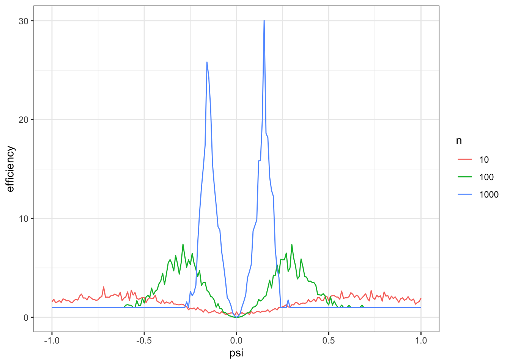
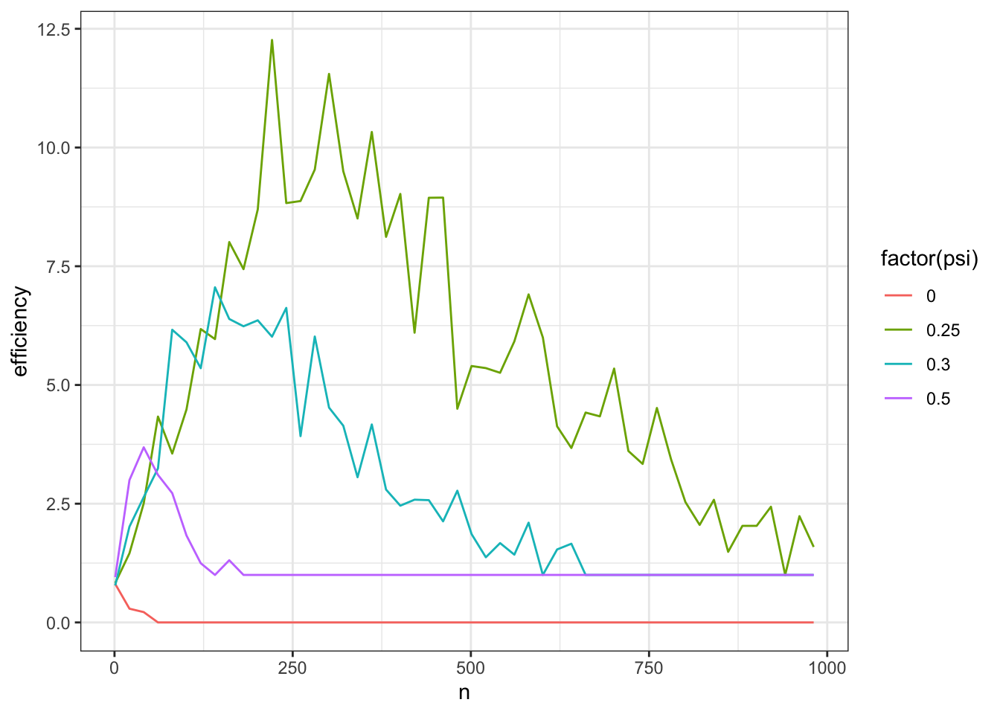

While restricting ourselves to asymptotically linear estimators is a good start, unfortunately it is not quite enough to develop a sensible theory of optimality. In this section we’ll first argue for why a further restriction is not only sensible but useful. Then we will come up with and refine a definition that suits our needs.
2.1 Hodges’ Estimator
Let’s presume we’re interested in estimating the mean \(\psi = \Psi(\mathbb P) = \mathbb E_{\mathbb P}[Z]\) from \(n\) IID draws of a scalar random variable \(Z\) that we know is normally distributed with standard deviation \(\sigma=1\). Our statistical model is therefore \(\mathcal P = \{\mathcal N(\psi, 1): \psi \in \mathbb R\}\), a one-dimensional parametric model. Obviously this is a contrived example where we know a lot about \(Z\), but the point is to show that even in this extremely favorable setting we can be led astray by mathematical arguments that put our attention in the wrong place.
The first estimator is just the usual sample mean. The second is what is called Hodges’ estimator. It is an alternative that usually behaves similarly to the sample mean in large samples, but prefers to estimate 0 in small samples.
[pic: hodges as a fn of sample mean for different n]
Since \(Z\) are normal random variables with unit variance and mean \(\psi\), we know that the sample mean has the exact distribution \(\mathcal N(\psi, 1 / n)\). Thus it follows that \[
\sqrt{n}(\hat\psi - \psi) \rightsquigarrow \mathcal N(0, 1)
\]
Hodges’ estimator, however, has the following asymptotic distribution:
Derivation of the asymptotic distribution of Hodges’ estimator
Let’s prove that \(\sqrt{n}(\hat\psi - \psi) \rightsquigarrow \mathcal N(0, 0)\) when the mean of \(Z\) is zero. This will require some understanding of what is meant formally by convergence in probability and a common probability tool called Chebyshev’s inequality. It’s not at all important to understand this proof, I just provide it for completeness and as a refresher for those who are familiar with this kind of argument.
That statement is the same as saying that \(\sqrt{n}(\hat\psi - \psi) \overset{\mathbb P}{\to} 0\), which we will prove. For any \(\epsilon > 0\),
by definitions and total probability. Now, applying Chebyshev’s inequality, \[
\mathbb P \left\{ |\hat\psi| > n^{-1/4} \right\} \le \frac{\sigma^2 / n}{n^{-1/2}} = \frac{1}{\sqrt{n}} \to 0
\]
Which proves the desired convergence. Perhaps surprisingly, the proof still works if we are interested in proving that \(r_n (\tilde\psi -\psi)\) converges in probability to 0 when the mean of \(Z\) is zero for an arbitrary rate \(r_n\). In other words, this convergence happens arbitrarily quickly as far as the asymptotics are concerned.
Nearly identical arguments are used to show that Hodges’ estimator has the same asymptotic distribution as the sampling mean when the true mean is not zero. This is a fine exercise to try on your own to practice your probability theory.
Like the sample mean, Hodges’ estimator is definitely asymptotically linear: the influence function is
which is certainly a \(\mathbb P\)-mean-zero \(\mathcal L_2(\mathbb P)\) function for all \(\mathbb P\) with finite mean of \(Z\). Therefore if we were defining optimality among AL estimators, we would have to consider Hodges’ estimator as a candidate.
Exercise 2.1 Judging by the asymptotic distributions, do you think the sample mean or Hodges’ estimator is better?
The sample mean and Hodges’ estimator are asymptotically the same across most distributions. But in any case where \(\mathbb E[Z] =0\), Hodges’ is clearly better: its variance goes to zero even if blown up by the square root of \(n\) whereas the sample mean’s variance does not. Therefore by these arguments Hodges’ is the better estimator overall.
But if this is true, why do we use the sample mean instead of Hodges’ estimator? And moreover why couldn’t we reason the same way about a Hodges’-style estimator that has a special preference for some other value instead of zero? Wouldn’t that estimator also be better than the sample mean for that special value and otherwise the same?
The reason we don’t use Hodges’ estimator is that the asymptotic arguments hide that this estimator actually performs much worse than the sample mean for most values of \(n\) and most possible distributions of \(Z\). You can see this in a simulation (or work it out analytically):
library(tidyverse)
── Attaching core tidyverse packages ──────────────────────── tidyverse 2.0.0 ──
✔ dplyr 1.1.4 ✔ readr 2.1.5
✔ forcats 1.0.0 ✔ stringr 1.5.1
✔ ggplot2 3.5.1 ✔ tibble 3.2.1
✔ lubridate 1.9.3 ✔ tidyr 1.3.1
✔ purrr 1.0.2
── Conflicts ────────────────────────────────────────── tidyverse_conflicts() ──
✖ dplyr::filter() masks stats::filter()
✖ dplyr::lag() masks stats::lag()
ℹ Use the conflicted package (<http://conflicted.r-lib.org/>) to force all conflicts to become errors
`summarise()` has grouped output by 'n'. You can override using the `.groups`
argument.

The \(y\)-axis of the plot shows the relative efficiency of Hodges’ estimator, defined as the ratio of MSEs between Hodges’ estimator and the sample mean: \(\mathbb E[(\tilde\psi - \psi)^2]/\mathbb E[(\hat\psi - \psi)^2]\). If this is greater than one, then Hodges’ estimator is better than the sample mean, if less than one, it is worse.
As you can see, regardless of what \(n\) is, Hodges’ estimator is worse (and sometimes much worse) than the sample mean for the majority of the plotted values of \(\psi\). So then why do the asymptotic arguments suggest that Hodges’ estimator is actually better than the sample mean?
The problem is that the asymptotics are only concerned with the behavior of each estimator at any particular distribution of \(Z\). In our contrived model, the distributions of \(Z\) are all normal with unit variance so a single distibution corresponds to a value of \(\psi\). If you look at a single nonzero point on the \(x\)-axis (say, \(\psi = 1/2\)) and compare the relative efficiency as \(n\) increases you’ll see that it does converge to 1: both estimators are asymptotically equivalent. At the point \(\psi=0\), however, the relative efficiency converges to 0 meaning that Hodge’s estimator is infinitely more efficient at that point asymptotically. We can repeat our simulations but plot them a little differently in order to see this. Instead of plotting efficiency against \(\psi\) and slicing by \(n\), we’ll instead plot efficiency against \(n\) and slice by \(\psi\) (you could imagine a 3D plot with efficiency on the z-axis and \(n\) and \(\psi\) on the x and y).
`summarise()` has grouped output by 'n'. You can override using the `.groups`
argument.

If you look at these plots, you’ll see that the bad behavior of Hodges’ estimator is temporary for each value of \(\psi \ne 0\). As \(n\) increases, the estimator eventually behaves like the sample mean. Since the asymptotics don’t care about any initial behavior of the sequence, they completely ignore the fact that Hodges’ estimator is usually much worse than the sample mean because those problems are “temporary” as far as the behavior at any fixed distribution is concerned.
The issue with that is that is that the problem doesn’t actually disappear, it just goes to another distribution! As you can see in our first plot, the region of bad behavior simply moves as we increase \(n\). If you’re standing still at a given \(\psi \ne 0\) you’d think everything is fine, but if you look across all values of \(\psi\) you notice that we’re just moving the problem around. That is precisely what the asymptotic arguments ignore: they are incapable of looking at the behavior of each estimator at multiple distributions simultaneously. They only consider a single distribution at a time. We call this pointwise asymptotic behavior because we’re looking at each “point” (distribution) \(\mathbb P\) in the model \(\mathcal P\) one-at-a-time. Once we look across all values of \(\psi\) at the same time, it’s clear that Hodges’ estimator is much worse than the sample mean.
Asymptotic linearity is only concerned with pointwise convergence, but to prevent the bad behavior of Hodges’ estimator we need some kind of uniform convergence: we’d like the sampling distributions of the estimates at each \(\mathbb P\) to “arrive” or “approach” their limits at the same time. Physically you can imagine flattening a marshmallow: if you push down at a point on the marshmallow (e.g. by squeezing it between your thumb and index finger), the mass will can just go elsewhere. But if you sandwich it between your palms, you ensure that it gets squeezed down everywhere at the same time. That’s “uniform” convergence.
Warning
See Section A.1.1 for the definition of uniform convergence of functions. This is a common type of convergence that we often want to generalize for other kinds of objects. In what follows we will present a notion of “uniform” convergence in distribution for random variables.
There’s actually another problem with this estimator that we didn’t capture with our original list of desiderata. We often want to know in advance how big a sample size we might need to get a particular level of confidence in our result (i.e. do a power calculation). If we understand the asymptotic distribution of our estimator under data were generated from a given distribution \(\mathbb P\), we have everything we need to do this. The problem is that we don’t know what the real distribution of the data are. So what is done in practice is we generate a rough guess \(\hat{\mathbb P}\) based on domain knowledge or previous data and use that for the power calculation. If \(\hat{\mathbb P}\) is close to \(\mathbb P\) we’d expect the required sample sizes to be the same. For this to work, however, we need the limiting asymptotic distribution of our estimates to be “continuous” over distributions: two data distributions that are close should give sampling distributions for a estimator that are close.
For Hodges’ estimator, this is not the case. The limiting distribution is the standard normal no matter how close you get to \(\psi=0\), but suddenly it is the degenerate distribution at that point. The discontinuity in the limiting distribution poses problems for a power calculation: if in reality \(\psi = 10^{-9}\) but we did our power calculation assuming \(\psi=0\) (a tiny, tiny error!), we would end up massively underpowering our study.
Estimators like Hodges’ estimator are called superefficient for reasons that will be explained in a few sections’ time. In general, superefficient estimators perform better than other estimators on some very small set of distributions at the cost of abitrarily bad performance that moves around over the other distributions as \(n\) increases. We want to rule out that sort of behavior so that we can compare estimators asymptotically without getting burned by their finite-sample behavior.
2.2 Regularity
We’ve identified a problem with just looking at AL estimators: there are always AL estimators that look good in terms of their pointwise asymptotics but are actually bad because they just move the problem around in a way that makes it invisible to the asymptotics.
To rule this out, we’ll impose an addition condition called regularity. In a rough sense, regularity usually does two things: it means that limit distributions vary smoothly (so, for example, power calculations are reliable) and that the estimator approaches its limit distribution in a (locally) uniform way across the model (so that asymptotics can’t hide bad performance that moves around the model).
We will start with a toy definition of regularity that we will build up to the formal definition in the next few sections. That will require us to introduce and explain a few abstractions but these will also come in handy later so it’s worth doing. For now, though, here’s a first draft: